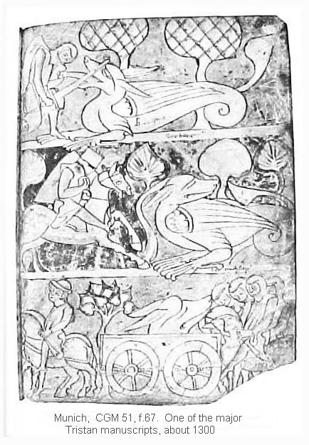

Imposture
The seneschal, as I have told you,
aspired above all else to be
the knight who wins the prized maid.
Hearing the death scream of the dragon,
that resounded so frightfully
far across the countryside,
he was inspired with an idea
that soon grew into a conviction. 9100
He read in his imagination
what had actually occurred,
and thought, aha, it's surely dead,
or driven into such a corner
that I can get the best of it
with no more than a trick or two.
Stealing away from his fellow riders,
he rode downhill through a ravine,
then spurred away in the direction
from which the sound had come.
Soon he came on the horse's remains
and stopped there to take stock.
He took his time to look around
and examine every detail—
having come no farther than this,
he already had cause for anxiety.
Somewhat recovered, he rode on,
although less than purposefully,
filled, in fact, with grave misgivings,
following the general direction
marked by the wide swath
of singed grass and vegetation.
And having gone but a little way,
almost before he knew it,
he happened on the dragon's carcass.
An encounter so unexpected
threw such a scare into him
that he nearly took a fall
and would have landed almost on it.
This was much too close for comfort—
he had nearly ridden over it.
His reaction was immediate:
he tried to wrest his horse around
so violently that horse and man
both landed in a heap.
As soon as he could get up
(off the ground, I mean),
it was more than he could manage
in his state of sudden panic
to collect his wits enough
to get back on his horse.
This sorry seneschal
left it standing there and fled.
But when nothing came in pursuit,
he halted and timidly crept back.
Finding his spear, he picked it up,
took his horse by the bridle,
led it to a convenient stump
and got back in the saddle.
To help shrug off this mishap 9150
he galloped off to a safe distance,
then turned to get a better look
at this frightful spectacle.
Was it dead or alive?
Surely it was safely dead.
By God, what luck!
he thought.
This is a happy chance, indeed.
I came along just in time,
and I'm going to make the best of it!
Bravely levelling his spear
he gave the horse its head,
clamped his spurs into it
and in a headlong charge
came on crowing martially,
schevalier damoysele!
ma blunde Isot, ma bele!
He delivered such a forceful thrust
that the stout ashen shaft of the spear
shot backward through his grasp.
Here he called a considered truce
to the battle as it stood so far.
Now wait,
he thought, who killed this beast?
If he's still alive, whoever it was,
the plan I thought I had
isn't going to work.
Wheeling about, he rode off,
searching this way and the other,
in hopes that if he found him
lying somewhere not far away
so exhausted or badly wounded
as not to have much fight left in him,
he would be able to take him on,
finish him off with little trouble,
and then bury the body somewhere.
But finding not a trace of him,
he said to himself, well, let it go.
Whether he's alive or not,
still I'm surely first in line,
and nobody can dispute that.
I have friends and followers
with high rank and good connections.
Whoever might want to challenge us
would surely wind up the loser.
And putting spurs to his mount
he rode back to his adversary
and there dismounted to face it.
Now he commenced the fight again
exactly where he had left off.
Whipping his sword from its sheath
he hacked and savaged the body with it, 9200
leaving cuts here and there
until some parts were shredded.
He went to work on the creature's neck,
which he very much wanted to sever,
but it being so hard and so thick,
he soon tired of the effort.
Then breaking his spear on a fallen tree,
he rammed the pointed end
deep into the dragon's throat
as though from a head-on joust.
Then mounting his charger once again,
he rode away in high spirits,
heading back to Weisefort.
There he commandeered a team
of four horses and a wagon
with which to fetch the dragon's head.

He spread the tale far and wide
of how he had wrested victory
in spite of terrifying odds
and the most strenuous jeopardy.
Yes, by God, everyone,
turn your ears and eyes this way,
see what extraordinary things
a man with enough courage
and a tried and true spirit
accomplishes for a beloved woman!
Indeed, I can hardly believe
that I came through alive,
considering the danger I was in.
There can be no doubt of this—
were I so tender as other men,
never would I have survived.
Some other poor adventurer
no doubt in quest of noble deeds—
I have no idea who it was—
had found there his nemesis
before I came on the scene.
And there it was he met his end.
God surely had abandoned him,
for the two of them were devoured,
man and horse, both are dead.
Half the horse still remains,
charred and chewed to pieces.
To make a long story short,
I have gone through more trouble
for woman's sake, than any man.
Then mustering all his supporters,
he led the way back to the serpent
and showed this marvel to all of them,
bidding each to examine it 9250
so that he could testify
to the truth of what he had seen.
They brought the head back with them.
Having summoned his kin and vassals
by invitation or command,
the seneschal petitioned the king,
reminding him of his solemn oath.
A day of national convocation
was proclaimed at Weisefort.
The whole council was called
(by this I mean the landed barons),
and all of them prepared to come,
as required for assembly at the court.